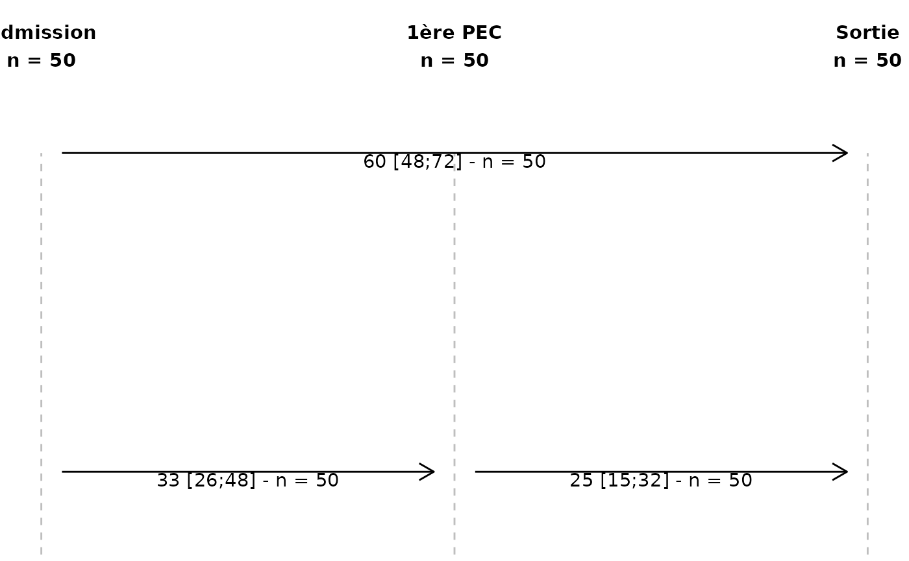
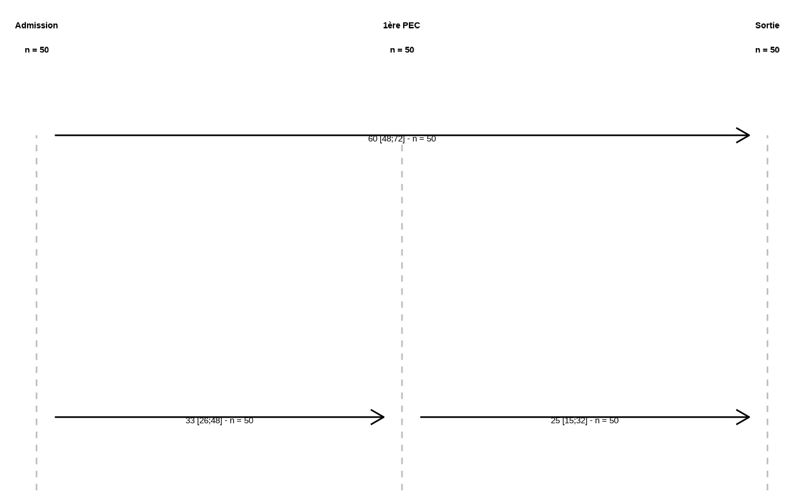

Plot des délais entre points temporels
plot_delais_intervals.RdGénère un diagramme représentant les délais entre paires ordonnées de points
temporels présents dans base. Les “points” (événements) sont positionnés
sur l’axe des abscisses selon l’ordre de time_points. Chaque délai est
tracé sous forme de segment fléché entre deux points, avec un libellé et une
organisation verticale (pistes) pour éviter les chevauchements.
Usage
plot_delais_intervals(
base,
time_points,
tab_delay = NULL,
lower_bound = -Inf,
upper_bound = Inf,
min_display = 5
)Arguments
- base
Un
data.frame/tibblecontenant les variables de date/heure (POSIXct) utilisées pour calculer les délais.- time_points
Vecteur nommé (
named character) où les valeurs sont les noms de colonnes debase(ex."t0","t1", …) et les noms (names(time_points)) sont les libellés à afficher (ex."Admission","1ère PEC", …). L'ordre de ce vecteur définit l'ordre horizontal.- tab_delay
Par défaut
NULL. Sinon, un objet à 2 colonnes (data.frame/tibble/matrix) indiquant, par ligne, une paire(d1, d2)de variables pour lesquelles calculer/afficher le délai. Les valeurs ded1etd2doivent correspondre aux valeurs detime_points(c.-à-d. aux noms de colonnes dansbase), pas aux libellés.- lower_bound, upper_bound
Bornes numériques passées à
fct_calc_delay()pour contraindre/tronquer le délai (par ex. exclure les valeurs hors bornes). Par défaut-InfetInf.- min_display
Le nombre minimal de patient de délai valide pour afficher la médiane et l'interquartile. Remplacé par "X" sinon.
Value
Un objet ggplot2::ggplot représentant le diagramme des délais.
Details
Si
tab_delay = NULL, la fonction considère toutes les paires ordonnées \((d1, d2)\) telles qued1précèded2dans l'ordre detime_points.La position verticale (piste
y) des délais est calculée parfct_assign_y_tracks()pour limiter les recouvrements de segments.Le calcul des délais et la génération des libellés sont délégués à
fct_calc_delay(). Cette fonction doit retourner au moins une colonnelab_del(libellé) et les éventuelles valeurs numériques nécessaires.Les étiquettes en haut de la grille verticale affichent le libellé (
names(time_points)) etn, le nombre de valeurs non manquantes dansbasepour chaque variable.Les fonctions utilitaires
fct_assign_y_tracks()etfct_calc_delay()doivent être disponibles dans l'environnement.
Examples
# --- Données jouets
set.seed(1)
base <- tibble::tibble(
t0 = as.POSIXct("2024-01-01 08:00:00", tz = "UTC") + runif(50, 0, 2*3600),
t1 = t0 + runif(50, 10, 60) * 60, # +10 à +60 minutes
t2 = t1 + runif(50, 5, 45) * 60 # +5 à +45 minutes
)
# time_points : valeurs = noms de colonnes ; noms = libellés
time_pts <- c("Admission" = "t0", "1ère PEC" = "t1", "Sortie" = "t2")
# 1) Plot de toutes les paires (par défaut)
p1 <- plot_delais_intervals(base, time_pts)
p1

# 2) Sous-ensemble de paires
td <- data.frame(d1 = c("t0","t1"), d2 = c("t1","t2"))
p2 <- plot_delais_intervals(base, time_pts, tab_delay = td)
p2
# 3) Bornes des délais (exemple)
p3 <- plot_delais_intervals(base, time_pts, lower_bound = 0, upper_bound = Inf)
p3
